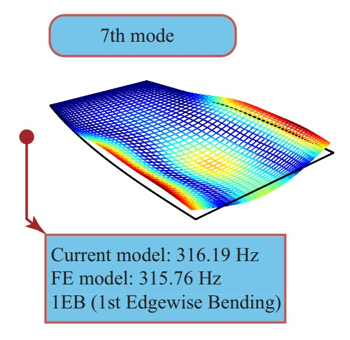

Dynamic modeling of rotating axially functionally graded pre-twisted blades with chord length variations
27th International Conference on Composite Structures (ICCS27), Ravenna, Italy, 3 - 6 September 2024. Presentation

Abstract
In this study, dynamics of rotating blades is investigated considering geometric, material, and rotational complexities. A comprehensive modeling approach, characterizing blade geometry in terms of pre-twist and pre-set angles, as well as chord length curved variations is employed based on the theory of surfaces. Depending on the chord length variation, the width of the blade can narrow towards one end. Axially functionally graded material is considered for the blade operating under intense centrifugal stresses. The rotational stiffening effects are incorporated into the model via direct integration of centrifugal forces (DICF). The integral boundary value problem governing the dynamics of the rotating blade, is derived following extended Hamilton’s method. A framework based on Spectral Chebyshev technique is developed that enables accurately and efficiently predicting the dynamics of the problem. This framework can handle geometry and material variations in the spatial domain and provides a compact standard form formulation for complexities due to rotational effects. To validate the precision of the presented solution method, the present results are compared to those obtained through finite element method. The results are in excellent agreement, yet the presented method can solve the integral boundary value problem in a fraction of time compared to the FEM.